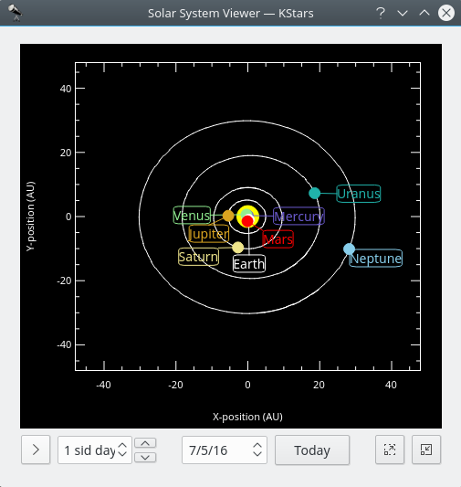

Solar System Viewer

This tool displays a model of our solar system as seen from above. The Sun is drawn as a yellow dot in the center of the plot, and the orbits of the planets are drawn as ellipses with the correct shapes and orientations. The current position of each planet along its orbit is drawn as a colored dot, along with a name label. The display can be zoomed in and out with the + and - keys, and the display can be recentered with the arrow keys, or by double-clicking anywhere in the window with the mouse. You can also center on a planet with the 0–9 keys (0 is the Sun; 9 is Pluto). If you center on a planet, it will be tracked as time passes in the tool.
The Solar System Viewer has its own clock, independent of the clock in the main KStars window. There is a timestep control widget here, similar to the one in the main window's toolbar. However, this control defaults to a timestep of 1 day (so that the motions of the planets can be seen), and it starts out with the clock paused when the tool is opened. You may set the date to now by pressing the Today button.
|
Note |
|
|
|
The current model used for Pluto's orbit is only good for dates within about 100 years of the present date. If you let the Solar System clock advance beyond this range, you will see Pluto behave very strangely! We are aware of this issue, and will try to improve Pluto's orbit model soon. |